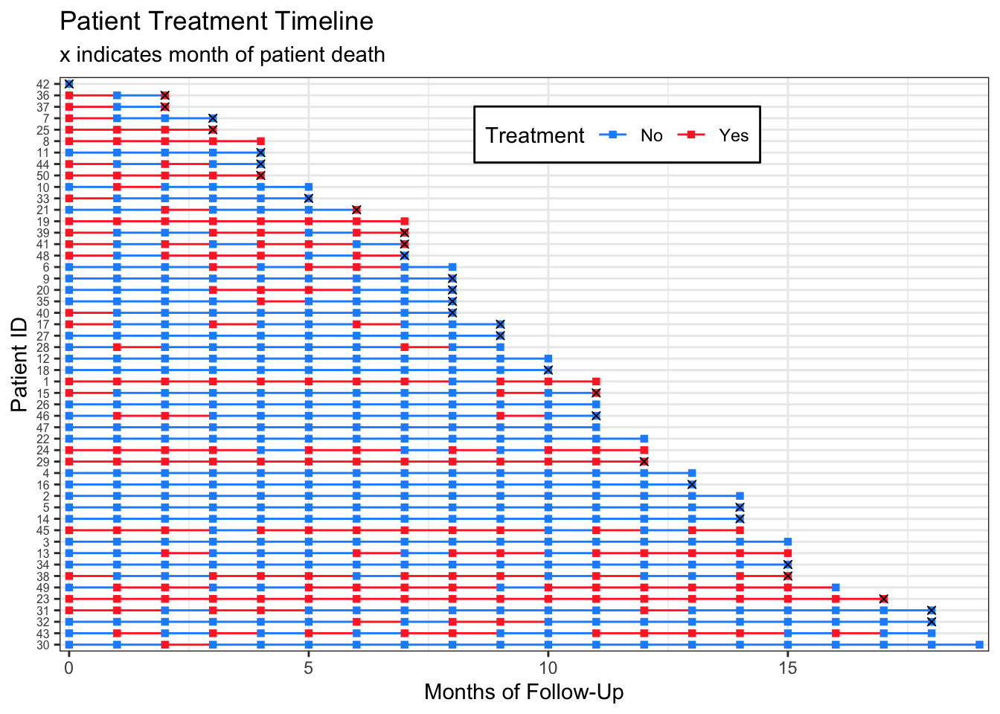

A ggplot code walkthrough for making treatment timelines or “swimmer plots” for longitudinal time-to-event data on 1) a categorical covariate and 2) a continuous covariate organized by missingness frequency.
November 3, 2019.
I am a biostatistician at a research university, and I often find myself working with longitudinal survival data. As with any data analysis, I need to examine the quality of my data before deciding which statistical methods to implement.
This post contains reproducible examples for how I prefer to visually explore survival data containing longitudinal exposures or covariates. I create a “treatment timeline” for each patient, and the end product looks something like this:
Each line represents one patient, and each square represents a measurement at a specified point. I find these graphs useful to look for patterns or discrepancies in follow up times, treatment, and missingness. They also allow me to verify that my coding is correct as I move through different data manipulations for my analyses.
For the following examples I generate longitudinal survival data sets. I skip over how I made this data because it’s not the focus of this post, but if you have questions about the data generation please let me know. In general, I am trying to work from the point in a survival data analysis where you’ve already calculated each individual’s time to event.
Example 1: Binary Treatment
To make these charts, my first step is to load the package tidyverse, since I use functions from dplyr, tidyr, forcats, and ggplot2.
library(tidyverse)Here is the data generation code. If you’re interested in how I made it, you can check the comments, but if not, I recommend just copying and pasting into your R console to try the plotting code.
set.seed(7)
n <- 50 # The data sets I make these visualizations for are typically 100-500 patients in size, but for space purposes I'll set my n to only 50.
dat <-
tibble(.rows = n) %>% # empty data frame / tibble with n rows
mutate(pt_id = factor(row_number()), # patient ids are 1-n
pt_trt_prob = runif(n,0,1), # randomly generate a treatment probability for each patient so we can see patterns
months_followup = round(runif(n, 0, 20)), # randomly generate length of time in the study
death = rbinom(n, 1, .5)) %>% # death randomly occurs at any time point. Obviously an unrealistic assumption. :)
group_by(pt_id) %>% # group by patient so we can do more data manipulation
complete(months_followup = full_seq(0:max(months_followup), 1)) %>% # add i^n all the months patients are in the study
fill(pt_trt_prob, .direction = "up") %>% # fill in the treatment probability I made earlier so I can use this to add treatment for every time point
ungroup() %>% # no longer need patients grouped
mutate(trt = factor(rbinom(row_number(), 1, pt_trt_prob^2)), # fill in treatment for everyone based on their treatment probability
death = replace_na(death, 0)) %>% # also fill in death
select(pt_id, months_followup, trt, death) # remove leftover columns from data generationLet’s look at the data. It’s in “long” format with patient ID’s repeating for each month_followup they were in my (fake) study. At every month, we know whether or not they were on the treatment, and whether they died at that time point. This first example does not contain any missingness.
knitr::kable(head(dat))| pt_id | months_followup | trt | death |
|---|---|---|---|
| 1 | 0 | 1 | 0 |
| 1 | 1 | 1 | 0 |
| 1 | 2 | 1 | 0 |
| 1 | 3 | 1 | 0 |
| 1 | 4 | 1 | 0 |
| 1 | 5 | 1 | 0 |
We can now plot our data in a very basic way. We really only need to specify in the aesthetics that the x-axis is time, the y-axis is subject IDs, the color should correspond to treatment, and our lines should be grouped together by subject. Don’t forget that last one! Then we can say we want geom_line to make a base timeline for each subject, and the points on the timeline should be squares (shape = 15 in the geom_point mapping function).
Et voilà! A cute patient treatment timeline.
dat %>%
ggplot(aes(x = months_followup, y = pt_id, group = pt_id, col = trt)) +
geom_line() +
geom_point(shape = 15)Okay, it’s not that cute. But that little bit of code is really the core of the plot! If you want to add markers of death (or any other event) and rearrange by length of follow up time it just takes a little bit of extra data manipulation and one additional line of ggplot2 code.
dat %>%
group_by(pt_id) %>%
# make a new column with all patients last follow up visit
mutate(last_month_followup = max(months_followup),
# new variable for month that patients died, if they died
month_death = case_when(death == 1 ~ last_month_followup, TRUE ~ NA_real_)) %>%
# reorder pt id by last month of follow up (highest to lowest)
# without fct_rev, chart is arranged in opposite direction (lowest to highest)
ungroup() %>%
mutate(pt_id = fct_rev(fct_reorder(pt_id, last_month_followup))) %>%
ggplot(aes(x = months_followup, y = pt_id, group = pt_id, col = trt)) +
geom_line() +
geom_point(shape = 15) +
# add in a new mapping layer of points that correspond to death
geom_point(aes(x = month_death, y = pt_id), col = "black", shape = 4) Warning: Removed 515 rows containing missing values (geom_point).Don’t worry about the warning for removing missing values – it’s because we have NAs at most months for our month_death, so geom_point doesn’t know where to put an ‘x’ marker.
Finally, let’s work on making the plot a bit nicer to look at:
dat %>%
group_by(pt_id) %>%
mutate(last_month_followup = max(months_followup),
month_death = case_when(death == 1 ~ last_month_followup, TRUE ~ NA_real_)) %>%
ungroup() %>%
mutate(pt_id = fct_rev(fct_reorder(pt_id, last_month_followup)),
# make the treatment variable labels nicer
trt = factor(trt, levels=0:1, labels=c("No","Yes"))) %>%
ggplot(aes(x = months_followup, y = pt_id, group = pt_id, col = trt)) +
geom_line() +
geom_point(shape = 15) +
geom_point(aes(x = month_death, y = pt_id), col = "black", shape = 4) +
theme_bw() +
labs(x = "Months of Follow-Up", y = "Patient ID", col = "Treatment",
title = "Patient Treatment Timeline",
subtitle = "x indicates month of patient death") +
# edit legend box and make patient ids small
theme(axis.text.y = element_text(size=6),
legend.position = c(.6, .9), legend.direction = "horizontal",
legend.background = element_rect(linetype="solid", colour ="black")) +
# remove extra space around timeline
scale_x_continuous(expand=c(0.01,0.01)) +
# set the color of the lines and points
scale_color_manual(values=c("dodgerblue","firebrick1"))Warning: Removed 515 rows containing missing values (geom_point).
I have never made one of these plots for publication, so I don’t mind that the subtitle contains legend information. If you wanted to have the month_death markers in a legend, you could change:
geom_point(aes(x = month_death, y = pt_id), col = "black", shape = 4)to:
geom_point(aes(x = month_death, y = pt_id, shape = month_death), col = "black")Example 2: Continuous Covariate with Missingness
We can follow the very same steps for making a timeline for a continuous variable.
Again, here is the data generation code so you can make these plots yourself:
dat_cc <-
tibble(.rows = n) %>%
mutate(pt_id = row_number(),
months_followup = round(runif(n, 0, 12)), # random months of follow up
pt_cov_mean = runif(n, 80, 150), # random mean of a patient's covariate measures
death = rbinom(n, 1, 0.5)) %>% # random death
group_by(pt_id) %>%
complete(months_followup = full_seq(0:max(months_followup), 1)) %>%
fill(pt_cov_mean, death, .direction = "up") %>%
mutate(last_month_followup = max(months_followup),
death_date = case_when(death == 1 ~ last_month_followup, TRUE ~ NA_real_)) %>%
ungroup() %>%
mutate(cov = rnorm(row_number(), pt_cov_mean, 10)) # everyone's covariates are close to their original mean (use to see patterns later)This time I am incorporating missingness at a patient-level on my simulated covariate measurements to show how we can use the plots to look at potential patterns in missingness.
dat_cc_samp <- dat_cc %>%
mutate(idx = row_number()) %>%
sample_frac(.4, weight = pt_cov_mean^3) %>% # sample 40% of data, with weights for the sample determined by the patient's mean covariate. This would mean patients with a higher mean covariate measure are more likely to have missing data.
pull(idx)
dat_cc_miss <- dat_cc %>%
mutate(cov = case_when(row_number() %in% dat_cc_samp ~ NA_real_,
TRUE ~ cov)) %>%
select(pt_id, months_followup, cov, death)Looking again at the data we’ll be using:
knitr::kable(head(dat_cc_miss))| pt_id | months_followup | cov | death |
|---|---|---|---|
| 1 | 0 | 91.69544 | 0 |
| 2 | 0 | NA | 1 |
| 2 | 1 | NA | 1 |
| 2 | 2 | 156.57317 | 1 |
| 2 | 3 | NA | 1 |
| 2 | 4 | 172.23156 | 1 |
We can plot the data and see this missingness with gray timeline points and lines:
dat_cc_miss %>%
group_by(pt_id) %>%
mutate(last_month_followup = max(months_followup),
month_death = case_when(death == 1 ~ last_month_followup, TRUE ~ NA_real_)) %>%
ungroup() %>%
mutate(pt_id = fct_rev(fct_reorder(factor(pt_id), last_month_followup))) %>%
ggplot(aes(x = months_followup, y = pt_id,
group = pt_id, col = cov)) +
geom_line() +
geom_point(shape = 15) +
geom_point(aes(x = month_death, y = pt_id), shape=4, col="black") +
theme_bw() +
labs(x = "Months of Follow-Up", y = "Patient ID", col = "Covariate",
title = "Patient Timelines: Continuous Covariate",
subtitle = "x indicates month of patient death, gray indicates missing covariate") +
theme(axis.text.y = element_text(size=6),
legend.position = c(.7, .9),
legend.direction = "horizontal",
legend.background = element_rect(linetype="solid", colour ="black")) +
scale_x_continuous(expand=c(0.01,0.01)) +
scale_color_gradient(low="dodgerblue", high="firebrick1", na.value = "lightgray",
breaks=c(90, 120, 150, 180)) Warning: Removed 143 rows containing missing values (geom_point).Alternatively, we could rearrange our timelines by the number of measures we have for each patient’s covariate of interest by making a new column containing the sum(!is.na(cov)) and rearranging our pt_id by that column.
dat_cc_miss %>%
group_by(pt_id) %>%
mutate(last_month_followup = max(months_followup),
# a column containing how many measures we have for each patient
n_measures = sum(!is.na(cov))) %>%
ungroup() %>%
mutate(
# reorder IDs by number of measures we have for each patient
pt_id = fct_rev(fct_reorder(factor(pt_id), n_measures)),
month_death = case_when(death == 1 ~ last_month_followup, TRUE ~ NA_real_)) %>%
ggplot(aes(x = months_followup, y = pt_id,
group = pt_id, col = cov)) +
geom_line() +
geom_point(shape = 15) +
geom_point(aes(x = month_death, y = pt_id), shape=4, col="black") +
theme_bw() +
labs(x = "Months of Follow-Up", y = "Patient ID", col = "Covariate",
title = "Patient Timelines: Continuous Covariate",
subtitle = "x indicates month of patient death, gray indicates missing covariate") +
theme(axis.text.y = element_text(size=6),
legend.position = c(.7, .9),
legend.direction = "horizontal",
legend.background = element_rect(linetype="solid", colour ="black")) +
scale_x_continuous(expand=c(0.01,0.01)) +
scale_color_gradient(low="dodgerblue",high="firebrick1",na.value = "lightgray",
breaks=c(90, 120, 150, 180)) Warning: Removed 143 rows containing missing values (geom_point).From this plot we can start to see that patients with more missing measurements have higher covariate measurements. This becomes clearer if we rearrange patients by their proportion of non-missing measurements.
dat_cc_miss %>%
group_by(pt_id) %>%
mutate(last_month_followup = max(months_followup),
# the proportion is the total number of measures divided by the total months of followup
prop_measures = sum(!is.na(cov))/last_month_followup) %>%
ungroup() %>%
# reorder IDs by proportion of measures we have for each patient
mutate(pt_id = fct_rev(fct_reorder(factor(pt_id), prop_measures)),
month_death = case_when(death == 1 ~ last_month_followup, TRUE ~ NA_real_)) %>%
ggplot(aes(x = months_followup, y = pt_id,
group = pt_id, col = cov)) +
geom_line() +
geom_point(shape = 15) +
geom_point(aes(x = month_death, y = pt_id), shape=4, col="black") +
theme_bw() +
labs(x = "Months of Follow-Up", y = "Patient ID", col = "Covariate",
title = "Patient Timelines: Continuous Covariate",
subtitle = "x indicates month of patient death, gray indicates missing covariate") +
theme(axis.text.y = element_text(size=6), # move legend to the side by removing legend location
legend.background = element_rect(linetype="solid", colour ="black")) +
scale_x_continuous(expand=c(0.01,0.01)) +
scale_color_gradient(low="dodgerblue",high="firebrick1",na.value = "lightgray",
breaks=c(90, 120, 150, 180)) Warning: Removed 143 rows containing missing values (geom_point).If this were my real data, I would follow up with my research collaborators for more information on the missingness mechanism.
Please let me know if you have questions or a suggestion for a data set. Happy treatment timeline plotting!
Session info
sessionInfo()R version 4.1.3 (2022-03-10) Platform: x86_64-apple-darwin17.0 (64-bit) Running under: macOS Catalina 10.15.7
Matrix products: default BLAS: /Library/Frameworks/R.framework/Versions/4.1/Resources/lib/libRblas.0.dylib LAPACK: /Library/Frameworks/R.framework/Versions/4.1/Resources/lib/libRlapack.dylib
locale: [1] en_US.UTF-8/en_US.UTF-8/en_US.UTF-8/C/en_US.UTF-8/en_US.UTF-8
attached base packages: [1] stats graphics grDevices utils datasets methods base
other attached packages: [1] forcats_0.5.1 stringr_1.4.1 dplyr_1.0.9 purrr_0.3.4
[5] readr_2.1.2 tidyr_1.2.0 tibble_3.1.8 ggplot2_3.3.6
[9] tidyverse_1.3.1
loaded via a namespace (and not attached): [1] tidyselect_1.1.2 xfun_0.32 haven_2.5.0 colorspace_2.0-3 [5] vctrs_0.4.1 generics_0.1.3 htmltools_0.5.2 yaml_2.3.5
[9] utf8_1.2.2 rlang_1.0.4 pillar_1.8.1 glue_1.6.2
[13] withr_2.5.0 DBI_1.1.2 dbplyr_2.1.1 modelr_0.1.8
[17] readxl_1.4.0 lifecycle_1.0.1 munsell_0.5.0 gtable_0.3.0
[21] cellranger_1.1.0 rvest_1.0.2 htmlwidgets_1.5.4 evaluate_0.15
[25] labeling_0.4.2 knitr_1.38 tzdb_0.3.0 fastmap_1.1.0
[29] cabinets_0.6.0 fansi_1.0.3 highr_0.9 broom_0.8.0
[33] backports_1.4.1 scales_1.2.1 jsonlite_1.8.0 farver_2.1.1
[37] fs_1.5.2 gridExtra_2.3 hms_1.1.1 digest_0.6.29
[41] stringi_1.7.8 grid_4.1.3 cli_3.3.0 tools_4.1.3
[45] magrittr_2.0.3 crayon_1.5.1 pkgconfig_2.0.3 ellipsis_0.3.2
[49] xml2_1.3.3 reprex_2.0.1 lubridate_1.8.0 assertthat_0.2.1 [53] rmarkdown_2.13 httr_1.4.2 rstudioapi_0.13 R6_2.5.1
[57] compiler_4.1.3